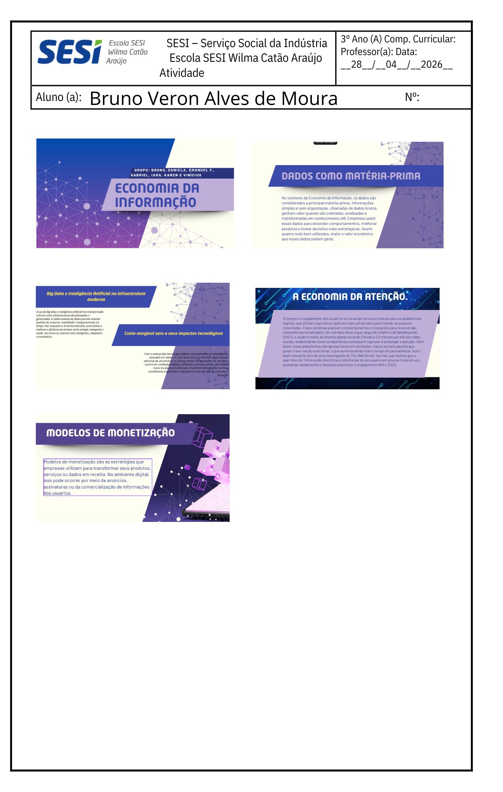

Atividade escolhida: Economia da informação

Nova Ordem mundial

A influência das tecnologias digitais em crises e movimentos sociais

Economia da informação
Raízes históricas da violência estrutural e simbólica no Brasil

limites da violência em tempos de guerra e seus impactos sobre a sociedade e o meio ambiente. (08/06)